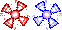

- Welcome to Touhou Wiki!
- Please register to edit. For assistance, check in with our Discord server or IRC channel.
Windmill
| The title of this article is unofficial; an official name hasn't been found, so it's been given a fitting title by the editors of this wiki for amenity, either from a popular fan-name or a mere description of the topic. If an official name appears, then it should be moved to the official name. |
|
 Sprite of two Windmills from Mystic Square.
| |
| Location | |
|---|---|
Appearances | |
| Official Games | |
| |
Windmills (風車 fuusha) are stage enemies that are a type of cross-shaped creature that somewhat recur in the PC-98 games, which vary in appearance. It's unknown what their real names are, what they're associated with or even if the different variants are related. The name "Windmill" is sometimes used in the fanbase to reflect their appearance and that they spin rapidly as they travel across the screen.
Windmill's Appearances[edit]
PC-98 games[edit]
- Story of Eastern Wonderland
Windmills first débuted on stage 4 in Story of Eastern Wonderland and re-appeared on the Final and Extra Stage, coloured in red. They'll come in queues from side to side, similar to the Evil Eye in Lotus Land Story, and if playing on Lunatic, they shoot a bullet as return fire if defeated.
- Lotus Land Story
A variant of Windmills appeared on the final stage of Lotus Land Story as Yuuka Kazami shoots Windmills at the player during her second boss fight. They appear more white and red with a vigorous effect. Also, some Evil Eyes had the appearance of a Windmill, like its some kind of blend because they'll able to also spin, but their eyes will stay fixed.
- Mystic Square
Windmills once again appeared on the fourth stage of Mystic Square there are two types: one coloured in red and the other blue, possibly referencing Yuki and Mai with their abilities. Yellow and purple coloured ones also appear on the Extra stage that act a bit more brutal.
Windows games[edit]
A creature that has a similar appearance to the PC-98 Windmills appear as general enemies in Embodiment of Scarlet Devil and Perfect Cherry Blossom, where they were referenced as "spinning enemies" by ZUN.[1]
Additional Information[edit]
- The flying yin-yangs, spinning enemies and Kedama have a few similarities to the Windmills with the way they spin and how they enter the screen.